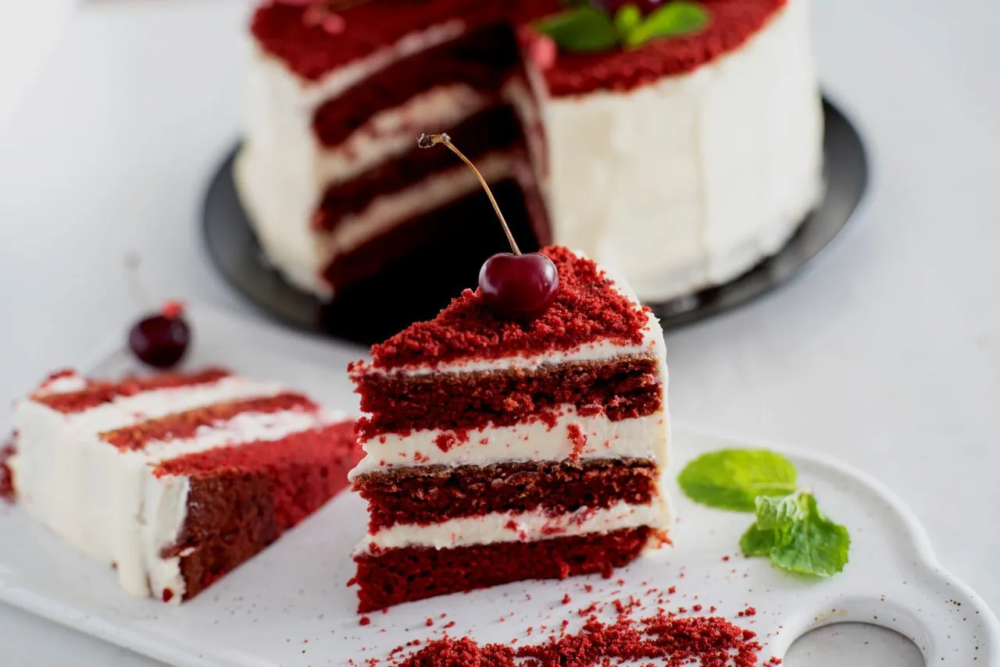

Bolo Red Velvet de Beterraba sem Corante
Uma receita especial, com cor natural e cobertura cremosa!

Preparo: 20 minutos
Forno: 40 minutos
Temperatura: 180 °C
Rendimento: 2 bolos de 20 cm
Ingredientes da massa
- 280 g de beterraba crua (2 unidades médias)
- 3 ovos
- 90 g de óleo de girassol
- 370 g de açúcar refinado
- 80 g de suco de limão (2 limões pequenos)
- 330 g de farinha de trigo branca
- 1 colher de sopa de fermento químico
Ingredientes da cobertura
- 75 g de manteiga amolecida
- 150 g de açúcar de confeiteiro
- 150 g de cream cheese
- 1/2 colher de chá de extrato de baunilha
Modo de preparo
- Pré-aqueça o forno a 180 °C. Prepare duas assadeiras redondas de 20 cm de diâmetro.
- No liquidificador, bata a beterraba, o óleo, os ovos, o açúcar e o suco de limão até obter uma mistura homogênea.
- Em uma tigela grande, peneire a farinha de trigo e o fermento químico.
- Acrescente a mistura líquida aos ingredientes secos e mexa até obter uma massa uniforme.
- Divida a massa entre as duas assadeiras e leve ao forno por aproximadamente 40 minutos.
- Espete um palito no centro do bolo. Se sair seco, o bolo está assado.
- Para a cobertura, bata a manteiga amolecida com o açúcar de confeiteiro até formar um creme liso.
- Acrescente o cream cheese e o extrato de baunilha. Misture até ficar cremoso.
- Leve a cobertura à geladeira para firmar.
- Depois que os bolos esfriarem, espalhe a cobertura entre as camadas e sobre o bolo.